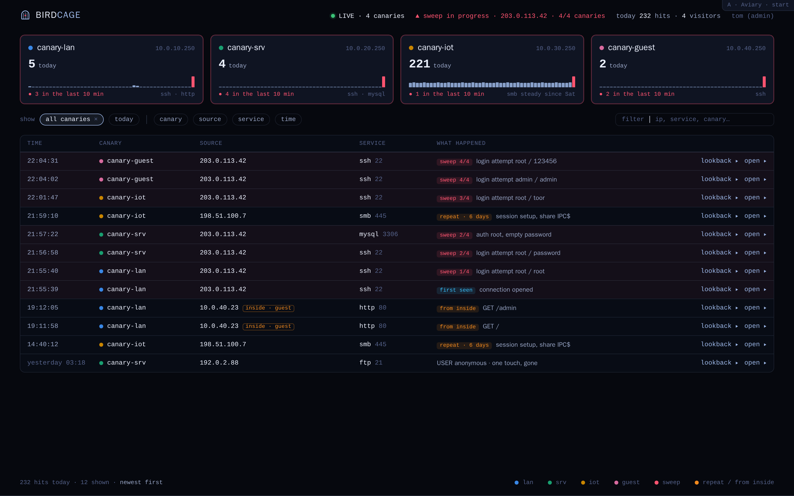
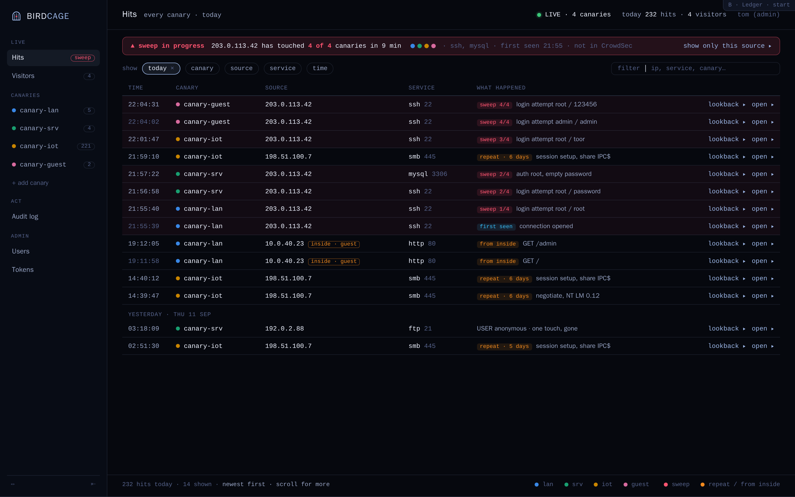
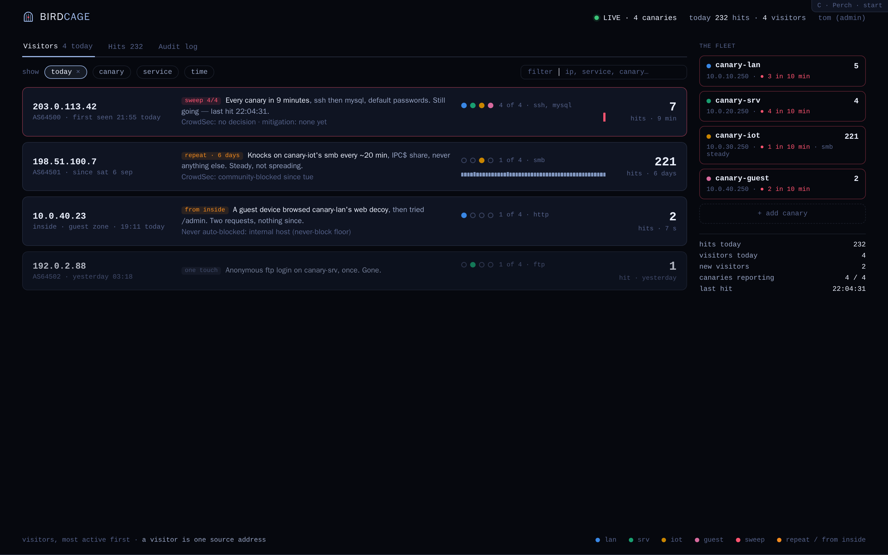

All three dropped 2026-09-12 — see README and round 2.
Three ways to lay out the same dashboard, in mikroview's visual language. Same fictional night in every one: four canaries, one sweep across all of them at 21:55–22:04 from 203.0.113.42, a six-day smb repeat visitor, one guest device poking from inside, one ftp touch yesterday. Each direction proves the same three scenes.
Your canaries are the headline: one card each with a 24-hour strip, then the stream of hits under them. A hit opens in a glass drawer.

landing ▸ filtered to one source ▸ a hit opened ▸Closest to mikroview: left rail with groups, one big table of hits with day separators, sweep as a banner. A hit expands in place.

landing ▸ filtered to one source ▸ a hit opened ▸Who is knocking, not what got knocked: one row per source address with a plain-English story, canaries touched, and a timeline. Fleet sits in the side column.

landing ▸ one visitor opened ▸ a hit opened ▸